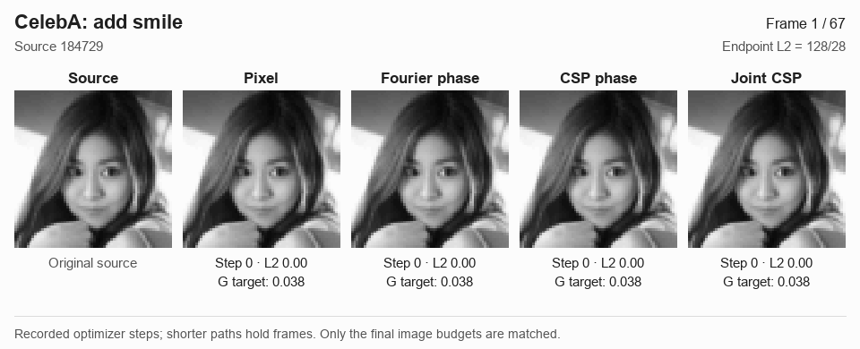
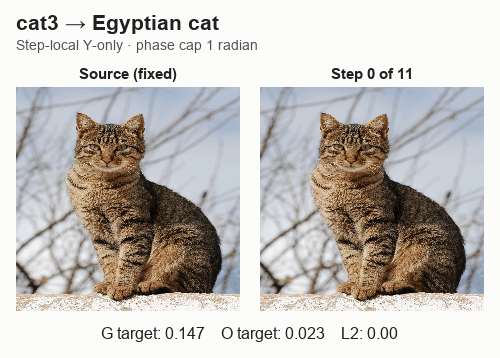
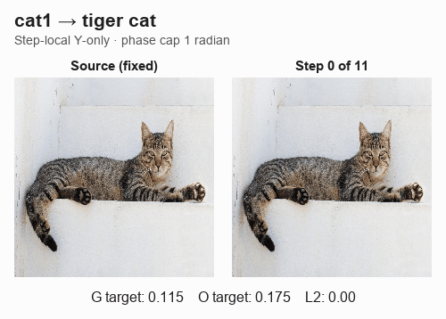

Confidence Is Not EvidenceProbing Classifier Sensitivity
with Steerable Lens
What does confidence tell us?
A classifier can become confident in a target label as we edit an image. But would a person see that target in the result?
Steerable Lens probes this question by changing images in different representations. We measure the score being optimized, transfer to other classifiers, and compatibility with a smooth image transformation. These measurements can disagree, even when the optimized classifier is highly confident.
Read the paper abstract
Moving an image along a classifier's gradient is a common way to probe what change would carry it across a decision boundary, but crossing that boundary does not by itself establish a recognizable change toward the target class. We introduce Steerable Lens, a framework for investigating classifier sensitivity through complex steerable-pyramid (CSP) interventions, with pixel and Fourier-phase edits as comparators. At matched image-change budgets, we measure three quantities separately: the optimized classifier's confidence, transfer to independent classifiers, and compatibility with a smooth image transformation. These measurements yield different method rankings. On MNIST at L₂ = 2, pixel edits reach a median target probability of 96.2%, yet joint independent-classifier agreement is infrequent and smooth reconstruction explains less edit energy than for CSP. On CelebA the structural ordering between representations depends on the reconstruction model. In a pilot human study, CSP edits receive more ratings of clear attribute change and no visible corruption than pixel or Fourier-phase edits. Frozen band probes further reveal fine-scale sensitivity in the examined driver classifiers, while larger budgets reduce common attainment across bands and controls. These results position CSP as a controlled diagnostic representation and motivate evaluating optimized confidence, classifier transfer, and smooth reconstruction separately, without treating any one as certification of recognizable target-class change.
Three different questions
A high target score answers one question about an edit. We keep two other measurements separate, rather than combine them into a single verdict.
Did the optimized score rise?
Optimized confidence. G is the classifier whose gradient produces the edit. Its target probability measures the response pursued during optimization, not independent validation.
Do other classifiers agree?
Independent transfer. Two classifiers excluded from edit optimization are evaluated separately and jointly. Agreement shows transfer; it does not establish what a person sees.
Can a smooth transformation explain it?
Smooth compatibility. E measures the fraction of edit energy explained by a restricted smooth warp, with optional spatial gain. A better fit does not certify recognizable target change.
Four ways to change an image
The representation determines which image coordinates the gradient can change. We compare direct pixel edits with phase and amplitude edits, then evaluate the resulting images at matched final distances.
Edit the pixels directly
The update acts on image intensities. This is the direct comparator: it follows the classifier gradient without a Fourier or steerable-pyramid representation.
Change global Fourier phase
The edit changes phase in the image’s Fourier representation. Its coordinates are global frequency components, rather than spatially localized pyramid bands.
Change local, multiscale phase
The complex steerable pyramid separates image structure by position, orientation, and scale. CSP phase edits change phase in those localized bands.
Change phase and amplitude together
Joint CSP uses both phase and amplitude coordinates of the complex steerable pyramid. It expands the available edits while retaining the multiscale representation.
This diagram describes the edit coordinates. It does not imply that any representation guarantees a semantic change.
Can you see a change in smiles and glasses?
Browse eight faces, with two examples for each direction. Each animation compares Pixel, Fourier phase, CSP phase, and Joint CSP alongside the unedited source. All four methods reach the same final image distance, L₂ = 128/28.
Add smile · Source 184729 · Example 1 of 2

↔ Swipe the figure to compare all four methods.

Selection and replay details
These are illustrative cases with common budget attainment, selected by source ID rather than classifier score. Every replay matches its original endpoint pixels and G/O/O₂ scores exactly. The animations use actual optimizer states, without image interpolation.
What do the measurements show?
On MNIST, confidence and evidence come apart
At a matched L₂ = 2 budget, pixel edits reach a median 96.2% probability on the classifier they optimize — while the two independent judges jointly confirm the target for only a handful of 300 edits. CSP edits have low median driver confidence at this budget yet are the most compatible with a smooth warp. A high optimized score does not guarantee agreement from the other classifiers.

The ordering is not universal
Repeating the comparison on CelebA faces reverses it: under the warp-plus-gain family, Fourier-phase edits become the most reconstructible. With a warp-only fit, CSP phase leads on all four face tasks. Which representation looks “most structural” depends on the dataset and on the fitting family — another reason no single axis can stand in for recognizable class change.

What did people see?
In a voluntary convenience sample of friends and family, two complete response sets yield 180 ratings on 90 edited images from 24 source–attribute cases. In these ratings, CSP edits drew more “clear attribute change” and “no corruption” ratings than pixel or Fourier-phase edits. These pooled ratings are repeated observations of the same images, not independent image samples. They provide descriptive evidence about these edits and do not show that any automated measurement predicts human judgment.
A classifier response is evidence about that classifier. A claim of recognizable change requires validation beyond the score being optimized.
What happens on natural images?
Each GIF shows twelve recorded frames from step-local luminance steering, with the unedited source alongside. The per-step phase cap is 1 radian. G is robust ResNet-50; O is standard ResNet-18.
Cat 3 → Egyptian cat

Cat 1 → Tiger cat

These selected demonstrations use the current reference implementation. They are not a matched method comparison or a human-validated semantic change. Amplitudes and residuals stay fixed within each step but can drift across the trajectory. GIFs use a limited color palette; the interactive viewer retains PNG frames.
Recompute the gradient, or keep it fixed?
Compare live and fixed gradients on all ten examples: cats toward lynx, fox, flamingo, leopard, and tiger, plus a golf ball toward a soccer ball. Live recomputes the gradient at every step; fixed computes it once at the source. Choose an example to watch both paths in one synchronized animation.
Cat 1 → lynx

↔ Swipe the figure to compare source, live, and fixed.


Reproduction details and comparison scope
The live paths were verified against the original results: all 108 cat image panels match exactly, and the golf sequence matches its saved arrays and scores. The first nonzero live and fixed edits also match for every pair. The comparisons show actual computed states and target probabilities; no in-between images are interpolated. Amplification is held equal within each pair, while the resulting image distances can differ. These amplification values are distinct from the phase caps used in the reference examples above.
Scope, figures, and data
What these examples can establish
The galleries illustrate recorded edits; they do not estimate how often an edit will look like its target. Independent classifier transfer and smooth reconstruction are diagnostic measurements, and neither replaces human evaluation.
The human pilot is descriptive, with two complete rating sets from voluntary friends-and-family participants. It supports observations about those images, not a general guarantee for CSP.
MNIST test images and CelebA faces had historical project exposure; CelebA also inherits historical checkpoint selection. Structural comparisons on faces are conditional on common budget attainment (7/25, 17/25, 24/25 and 22/25 at the larger budget). The interactive results page retains these denominators.
Citation
BibTeX citation for this work.
@unpublished{mahdisoltani2027confidence,
title = {Confidence Is Not Evidence: Probing Classifier
Sensitivity with Steerable Lens},
author = {Mahdisoltani, Farzaneh and Fleet, David},
year = {2027},
note = {Research manuscript}
}